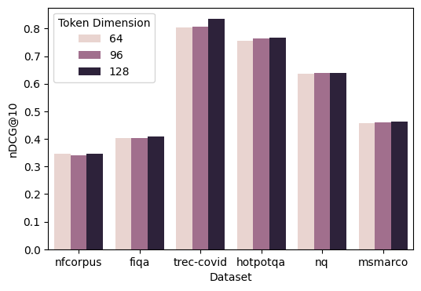

Jina-ColBERT-v2: A General-Purpose Multilingual Late Interaction Retriever / 全文中英对照¶
来源：arXiv:2408.16672v4。英文段落后紧接中文，覆盖所取 HTML 版本的主文、附录、图表、脚注与参考文献；公式、数字表和书目信息共用。中文以机器初译为底稿，进行了术语整理与结构核对，尚未逐句人工审定；遇到歧义请以紧邻英文和原论文为准。 原作版权归所列作者，许可见 原作许可；中文译文与版式改写在该许可条件下提供（涉及 SA 时沿用相同许可，涉及 NC 时仅限非商业使用）。
Authors and affiliations / 作者与机构¶
Rohan Jha 1 Affiliation: The University of Texas at Austin, Austin, Texas, USA Email: research@jina.ai Bo Wang Affiliation: Jina AI GmbH, Prinzessinnenstr. 19-20, 10969 Berlin, Germany Michael Günther Affiliation: Jina AI GmbH, Prinzessinnenstr. 19-20, 10969 Berlin, Germany Georgios Mastrapas Affiliation: Jina AI GmbH, Prinzessinnenstr. 19-20, 10969 Berlin, Germany Saba Sturua Affiliation: Jina AI GmbH, Prinzessinnenstr. 19-20, 10969 Berlin, Germany Isabelle Mohr Affiliation: Jina AI GmbH, Prinzessinnenstr. 19-20, 10969 Berlin, Germany Andreas Koukounas Affiliation: Jina AI GmbH, Prinzessinnenstr. 19-20, 10969 Berlin, Germany Mohammad Kalim Akram Affiliation: Jina AI GmbH, Prinzessinnenstr. 19-20, 10969 Berlin, Germany Nan Wang Affiliation: Jina AI GmbH, Prinzessinnenstr. 19-20, 10969 Berlin, Germany Han Xiao Affiliation: Jina AI GmbH, Prinzessinnenstr. 19-20, 10969 Berlin, Germany
Abstract / 摘要¶
EN. Multi-vector dense models, such as ColBERT, have proven highly effective in information retrieval. ColBERT’s late interaction scoring approximates the joint query-document attention seen in cross-encoders while maintaining inference efficiency closer to traditional dense retrieval models, thanks to its bi-encoder architecture and recent optimizations in indexing and search. In this work we propose a number of incremental improvements to the ColBERT model architecture and training pipeline, using methods shown to work in the more mature single-vector embedding model training paradigm, particularly those that apply to heterogeneous multilingual data or boost efficiency with little tradeoff. Our new model, Jina-ColBERT-v2 , demonstrates strong performance across a range of English and multilingual retrieval tasks.
中. 事实证明，多向量密集模型（例如 ColBERT）在信息检索方面非常有效。 ColBERT 的后期交互评分近似于交叉编码器中看到的联合查询文档注意力，同时由于其双编码器架构以及最近在索引和搜索方面的优化，保持了更接近传统稠密检索模型的推理效率。在这项工作中，我们对 ColBERT 模型架构和训练流程提出了一些渐进式改进，使用了在更成熟的单向量嵌入模型训练范例中工作的方法，特别是那些适用于异构多语言数据或在几乎没有权衡的情况下提高效率的方法。我们的新模型 Jina-ColBERT-v2 在一系列英语和多语言检索任务中表现出了强大的性能。
Introduction / 简介¶
EN. Neural retrieval has gained popularity in recent years following the arrival of capable pre-trained language models (PLMs) ( Devlin et al., 2019 ; Liu et al., 2019 ; Clark et al., 2020 ) . Two types of approaches have been employed to apply PLMs to retrieval. Sparse neural retrieval systems, such as SPLADE ( Formal et al., 2021 ) , represent texts as weighted bags of words that are interpreted as sparse high-dimensional vectors for maximum inner product search (MIPS). Dense retrievers similarly encode queries and documents as dense vectors, capturing relevance signals through spatial relationships extending beyond exact term matching.
中. 近年来，随着功能强大的预训练语言模型（PLM）的出现，神经检索越来越受欢迎（Devlin 等人，2019；Liu 等人，2019；Clark 等人，2020）。已采用两种方法将 PLM 应用于检索。稀疏神经检索系统，例如 SPLADE (Formal et al., 2021)，将文本表示为加权词袋，这些词袋被解释为用于最大内积搜索 (MIPS) 的稀疏高维向量。稠密检索器类似地将查询和文档编码为密集向量，通过超越精确术语匹配的空间关系捕获相关信号。
EN. Most dense retrievers encode a query or document as a single vector, commonly the result of mean-pooling or the [CLS]-embedding over the transformer’s final layer token embeddings. In contrast, recent multi-vector retrievers like ColBERT ( Khattab and Zaharia, 2020 ) generalize this embedding process to maintain an embedding for each token, computing relevance scores as a function of the similarities of query and document tokens instead. To make the ColBERT usable in practice, the output dimensionality is restricted to be much smaller than the single-vector models. This approach has the benefit of remaining compatible with much of the vector similarity infrastructure that makes single-vector methods efficient, but requires more space to store even a smaller embedding per token and compute at inference time to aggregate token interactions into a single score. This late interaction over token embeddings achieves greater in-domain performance and tends to be more robust out-of-domain than single-vector similarity. While ColBERTv2 is trained only on English MSMARCO triplets ( Bajaj et al., 2016 ) and has a monolingual BERT backbone, making it incapable of multilingual retrieval, some previous works extend the model to multilingual retrieval.
中. 大多数稠密检索器将查询或文档编码为单个向量，通常是均值池或Transformer最终层令牌嵌入上的 [CLS] 嵌入的结果。相比之下，最近的多向量检索器，如 ColBERT（Khattab 和 Zaharia，2020）概括了这种嵌入过程来维护每个标记的嵌入，而是根据查询和文档标记的相似性来计算相关性分数。为了使 ColBERT 在实践中可用，输出维度被限制为比单向量模型小得多。这种方法的优点是与许多向量相似性基础设施保持兼容，从而使单向量方法变得高效，但需要更多的空间来存储每个标记的更小的嵌入，并在推理时进行计算以将标记交互聚合到单个分数中。这种基于令牌嵌入的后期交互实现了更好的域内性能，并且往往比单向量相似性在域外更稳健。虽然 ColBERTv2 仅在英语 MSMARCO 三元组上进行训练（Bajaj 等人，2016）并且具有单语言 BERT 主干，使其无法进行多语言检索，但之前的一些工作将该模型扩展到多语言检索。
EN. ColBERT-XM ( Louis et al., 2024 ) does this by using parameter extensions for each additional language, and ( Lawrie et al., 2023 ) trains solely on machine-translated English MSMARCO data to get effective heterogeneous multilingual performance. These approaches, however, come with trade-offs in terms of model usability and training data diversity. Other multilingual multi-vector models like BGE-M3 ( Chen et al., 2024 ) produce extremely large token representations that limit their practical utility for first-stage retrieval.
中. ColBERT-XM（Louis 等人，2024）通过对每种附加语言使用参数扩展来实现这一点，并且（Lawrie 等人，2023）仅在机器翻译的英语 MSMARCO 数据上进行训练，以获得有效的异构多语言性能。然而，这些方法在模型可用性和训练数据多样性方面需要权衡。其他多语言多向量模型，如 BGE-M3（Chen 等人，2024）会产生非常大的标记表示，限制了它们在第一阶段检索的实际用途。
EN. In this work, we propose Jina-ColBERT-v2 , which introduces an improved training recipe for ColBERT models with the following features:
中. 在这项工作中，我们提出了 Jina-ColBERT-v2 ，它引入了 ColBERT 模型的改进训练配方，具有以下功能：
EN. Training with diverse weakly-supervised data: We additionally pretrain our modified PLM with rotary position embedding and train on large-scale unlabeled text pairs from various corpus with a weakly-supervised single-vector contrastive objective. A second-stage of ColBERT finetuning with labeled triplet data and supervised distillation is used to further boost its performance.
中. 使用各种弱监督数据进行训练：我们还使用旋转位置嵌入对修改后的 PLM 进行预训练，并使用弱监督的单向量对比目标对来自各种语料库的大规模未标记文本对进行训练。 ColBERT 的第二阶段使用标记的三元组数据和监督蒸馏进行微调，以进一步提高其性能。
EN. General multilingual performance: We train with data from a variety of high- and low-resource languages using both labeled and unlabeled data, including human- and machine-translated training data, and show that this improves even out-of-domain multilingual performance.
中. 一般多语言性能：我们使用标记和未标记数据（包括人工翻译和机器翻译的训练数据）来训练来自各种高资源和低资源语言的数据，并表明这甚至可以提高域外的多语言性能。
EN. Inference-agnostic efficiency: We introduce multiple sizes of linear projection heads, jointly trained using the non-weight tying variant of Matryoshka Representation Loss Kusupati et al. (2022) , enabling the selection of token embedding size at inference time with minimal performance degradation. We demonstrate that reducing the embedding dimensionality in half from 128 to 64 yields only a minor performance tradeoff. Additionally, our flash-attention optimized backbone, Jina-XLM-RoBERTa provides further free performance improvement during inference.
中. 与推理无关的效率：我们引入了多种尺寸的线性投影头，使用 Matryoshka Representation Loss Kusupati 等人的非权重绑定变体进行联合训练。 (2022)，能够在推理时选择令牌嵌入大小，同时将性能下降降至最低。我们证明，将嵌入维数从 128 减少一半到 64 只会产生很小的性能折衷。此外，我们的 flash-attention 优化骨干网 Jina-XLM-RoBERTa 在推理过程中提供了进一步的免费性能改进。
EN. Our experimental results show competitive retrieval performance across both English and multilingual benchmarks. We also present controlled experiments demonstrating the benefits, or lack thereof, of the training modifications we consider in developing our training recipe.
中. 我们的实验结果显示了英语和多语言基准上具有竞争力的检索性能。我们还提出了对照实验，证明了我们在制定训练方案时考虑的训练修改的好处或缺乏。
Related Work / 相关工作¶
EN. In this section, we discuss related work in single- and multi-vector retrieval, as well as the non-English late-interaction retrievers from which our training recipe draws inspiration.
中. 在本节中，我们讨论单向量和多向量检索的相关工作，以及我们的训练方案从中汲取灵感的非英语后期交互检索器。
Single-Vector Retrieval / 单向量检索¶
EN. Single-vector encoder models have demonstrated their potential as general-purpose embedding models across a number of downstream tasks ( Muennighoff et al., 2023 ) . When used in a bi-encoder retrieval model, they asymmetrically encode queries and documents as separate dense vectors, and measure their pairwise relevance as the cosine similarity between the vectors. Owing to their strong in-domain performance and straightforward inference scheme, there has been a growing focus on improving their training. Studies demonstrate that large-scale unsupervised pair training utilizing in-batch negatives, followed by a small-scale triplet finetuning stage, significantly improves performance compared to a dense retriever trained solely on triplet data ( Li et al., 2023 ; Günther et al., 2023 ) . Other works have incorporated asymmetric task-specific instructions for queries and documents to further enhance performance ( Wang et al., 2024 ) and demonstrated the efficacy of using synthetically generated training data, including using diverse task instructions and machine translations, to further improve model representations. ( Wang et al., 2023 ; Lee et al., 2024 )
中. 单向量编码器模型已经证明了其作为跨许多下游任务的通用嵌入模型的潜力（Muennighoff 等人，2023）。当在双编码器检索模型中使用时，它们将查询和文档不对称地编码为单独的密集向量，并测量它们的成对相关性作为向量之间的余弦相似度。由于其强大的领域内性能和简单的推理方案，人们越来越关注改进他们的训练。研究表明，与仅基于三元组数据训练的稠密检索器相比，利用批量负例进行大规模无监督配对训练，然后进行小规模三元组微调阶段，可显着提高性能（Li et al., 2023；Günther et al., 2023）。其他工作结合了针对查询和文档的非对称任务特定指令，以进一步提高性能（Wang et al., 2024），并证明了使用综合生成的训练数据（包括使用不同的任务指令和机器翻译）来进一步改进模型表示的功效。 （王等人，2023；李等人，2024）
Multi-Vector Retrieval / 多向量检索¶
EN. Multi-vector retrievers like ColBERT also employ a bi-encoder structure, but queries and passages are represented by a collection of smaller token embeddings rather than one large vector. As such, ColBERTv2’s training uses many of the same techniques as state-of-the-art single-vector models: cross-encoder distillation, multiple negatives per query, and self-mined hard negatives. Recent models have continued to improve on this training recipe, particularly for multilingual or non-English training. BGE-M3 ( Chen et al., 2024 ) adopts the two-stage pairs-to-triplets training pipeline, and does self-knowledge distillation, treating the combination of its sparse, dense, and multi-vector scores as the teacher score.
中. 像 ColBERT 这样的多向量检索器也采用双编码器结构，但查询和段落是由一组较小的标记嵌入而不是一个大向量表示的。因此，ColBERTv2 的训练使用了许多与最先进的单向量模型相同的技术：跨编码器蒸馏、每个查询多个否定以及自挖掘的硬否定。最近的模型不断改进这种训练方法，特别是对于多语言或非英语训练。 BGE-M3（Chen et al., 2024）采用两阶段pair-to-triplet训练流程，并进行自知识蒸馏，将其稀疏、稠密和多向量分数的组合视为教师分数。
Multilingual Retrieval / 多语言检索¶
EN. Owing to the quality of English-based pre-trained models (BERT) and annotated data (MSMARCO), many advances in neural retrieval have been applied first to the monolingual English setting Karpukhin et al. (2020) ; Xiong et al. (2020) ; Khattab and Zaharia (2020) . Researchers, however, have also made advances in non-English capabilities.
中. 由于基于英语的预训练模型 (BERT) 和注释数据 (MSMARCO) 的质量，神经检索方面的许多进展已首先应用于单语英语环境 Karpukhin 等人。 (2020);熊等人。 (2020);哈塔布和扎哈里亚 (2020)。然而，研究人员在非英语能力方面也取得了进展。
EN. On the modeling front, multilingual PLMs like mBERT ( Devlin et al., 2019 ) and later XLM-RoBERTa ( Conneau et al., 2020 ) have expanded pre-training to include text in up to 100 languages, including in cross-language contexts. For multilingual retrieval data, there are two approaches: natural and translated. Datasets like Mr-Tydi and MIRACL ( Zhang et al., 2021 ; Zhang et al., 2023b ) are built from human-generated and annotated queries, whereas mMARCO ( Bonifacio et al., 2022 ) is a collection of machine-translated copies of MSMARCO which inherit their judgments from the original dataset. The former method tends to be of higher quality and lacks the subtle distributional/idiomatic errors, dubbed "translationese", that the latter sometimes exhibits. Naturally, however, human generation costs more per example.
中. 在建模方面，mBERT（Devlin 等人，2019）和后来的 XLM-RoBERTa（Conneau 等人，2020）等多语言 PLM 已将预训练扩展为包括多达 100 种语言的文本，包括跨语言上下文。对于多语言检索数据，有两种方法：自然检索和翻译检索。 Mr-Tydi 和 MIRACL（Zhang 等人，2021；Zhang 等人，2023b）等数据集是根据人类生成和带注释的查询构建的，而 mMARCO（Bonifacio 等人，2022）是 MSMARCO 机器翻译副本的集合，它继承了原始数据集的判断。前一种方法往往质量较高，并且缺乏后者有时会出现的被称为“翻译语”的微妙分布/惯用错误。然而，自然地，每个例子的人类发电成本更高。
EN. Recent multi-vector work has also proposed further modifications along the dimensions of architecture and data. ColBERT-XM Louis et al. (2024) addresses the so-called curse of multilinguality ( Conneau et al., 2020 ) , the performance degradation of models pre-trained on too many tasks, with shared- and per-language parameters that allow for more robust zero-shot language transfer and post-hoc language extension. On the data approach, ColBERT-X ( Nair et al., 2022 ; Lawrie et al., 2023 ; Yang et al., 2024 ) uses language-mixed batches of machine-translated English data, and BGE-M3 ( Chen et al., 2024 ) curates unsupervised and high-quality supervised corpora of diverse multilingual training data.
中. 最近的多向量工作还提出了沿着架构和数据维度的进一步修改。 ColBERT-XM 路易斯等人。 （2024）解决了所谓的多语言诅咒（Conneau et al., 2020），即在太多任务上预训练的模型的性能下降，共享和每语言参数允许更强大的零样本语言迁移和事后语言扩展。在数据方法上，ColBERT-X（Nair et al., 2022；Lawrie et al., 2023；Yang et al., 2024）使用机器翻译的英语数据的语言混合批次，而 BGE-M3（Chen et al., 2024）则策划了多种多语言训练数据的无监督和高质量监督语料库。
Training Overview / 培训概览¶
EN. Jina-ColBERT-v2 ’s training paradigm has three parts:
中. Jina-ColBERT-v2的训练范式分为三个部分：
EN. 1.
中. 1.
EN. Modified Encoder Architecture : We use a modified encoder backbone, derived from XLM-RoBERTa with improvements made to its architecture and pre-training regime. We further extend ColBERT’s linear projection head by jointly training a collection of different-size heads for embedding size reduction.
中. 改进的编码器架构：我们使用改进的编码器主干，源自 XLM-RoBERTa，并对其架构和预训练机制进行了改进。我们通过联合训练一组不同尺寸的头来减少嵌入尺寸，进一步扩展了 ColBERT 的线性投影头。
EN. 2.
中. 2.
EN. Pair Training : To learn from the semantic structure of large quantities of diverse data in many languages, we first train our encoder model on weakly supervised text pairs from a variety of embedding datasets.
中. 配对训练：为了从多种语言的大量不同数据的语义结构中学习，我们首先在来自各种嵌入数据集的弱监督文本对上训练我们的编码器模型。
EN. 3.
中. 3.
EN. Triplet Training : Our model is further finetuned using retrieval examples in many languages with both positives and hard negatives, supervised by a highly-capable multilingual cross-encoder.
中. Triplet Training：我们的模型使用多种语言的检索示例进行进一步微调，其中包含肯定和硬否定，并由高性能的多语言交叉编码器监督。
EN. The following sections describe our experiments on these three components of training Jina-ColBERT-v2 .
中. 以下部分描述了我们对训练的这三个组成部分的实验 Jina-ColBERT-v2 。
Architecture / 建筑¶
Backbone Improvements / 主干改进¶
EN. Following many prior single- and multi-vector multilingual training efforts, we adopted XLM-RoBERTa as our backbone model due to its strong performance across various downstream tasks Nair et al. (2022) ; Louis et al. (2024) ; Chen et al. (2024) . To improve the efficiency, we enhance the XLM-RoBERTa architecture with flash attention ( Dao, 2024 ) .
中. 继之前的许多单向量和多向量多语言训练工作之后，我们采用 XLM-RoBERTa 作为我们的骨干模型，因为它在各种下游任务中具有强大的性能 Nair 等人。 (2022);路易斯等人。 (2024);陈等人。 （2024）。为了提高效率，我们通过闪存注意力增强了 XLM-RoBERTa 架构（Dao，2024）。
EN. We replace the absolute positional embeddings with rotary positional embeddings (RoPE, Su et al. (2023) ), which are empirically understood to be better. They also have the advantage of supporting context lengths far longer than 512 tokens, although we do not explicitly focus on long-context in this work. To warm up its new positional embeddings, we continued pre-training the modified backbone with the same masked language modeling objective for 160,000 steps on the RefinedWeb dataset Penedo et al. (2023) , a modern, high-quality corpus, under the masked language modeling objective. During this pre-training phase, we set the maximum sequence length to 8,192 tokens with a rotary base of 10,000 and employed whole-word-masking Devlin et al. (2019) , masking out 30% of the tokens. We call this modified language model Jina-XLM-RoBERTa.
中. 我们将绝对位置嵌入替换为旋转位置嵌入（RoPE，Su 等人（2023）），根据经验认为旋转位置嵌入更好。它们还具有支持远大于 512 个标记的上下文长度的优点，尽管我们在这项工作中没有明确关注长上下文。为了预热其新的位置嵌入，我们继续使用相同的掩码语言建模目标在 RefinedWeb 数据集 Penedo 等人上预训练 160,000 个步骤。 (2023) ，一个现代的、高质量的语料库，在屏蔽语言建模目标下。在此预训练阶段，我们将最大序列长度设置为 8,192 个标记，旋转基数为 10,000，并采用全字掩码 Devlin 等人。 (2019) ，屏蔽了 30% 的代币。我们将这种修改后的语言模型称为 Jina-XLM-RoBERTa。
Multiple Linear Heads / 多个线性头¶
EN. To reduce index sizes, ColBERT includes a linear head that projects its token embeddings from the hidden dimension of its language model down to a lower dimension ( \(768\to 128\) ). As a notable exception, BGE-M3’s multi-vector retrieval does not take this step, keeping its token embeddings at a full 1024 dimensions.
中. 为了减少索引大小，ColBERT 包含一个线性头，将其标记嵌入从其语言模型的隐藏维度投射到较低维度 ( \(768\to 128\) )。作为一个值得注意的例外，BGE-M3 的多向量检索不采取此步骤，将其标记嵌入保持在完整的 1024 维。
EN. We jointly train six linear heads with dimensions \(d\in\{64,96,128,256,512,768\}\) using Matryoshka Representation Loss (MRL, Kusupati et al. (2022) ). This allows users to choose greater or lesser space efficiency, with an associated performance trade-off. Figure 1 quantifies this tradeoff, showing the strong performance preservation of our reduced-dimension linear heads. Halving the token dimension ( \(128\to 64\) ) only causes its nDCG@10 to drop by 0.01 (1.59%). We unfortunately find that MRL’s weight-tying efficient variant (MRL-E), where losses are computed on truncations of the same token vector does not preserve performance well, which we hypothesize is a consequence of the already-low projected dimension of the original ColBERT formulation.
中. 我们使用 Matryoshka Representation Loss 联合训练六个尺寸为 \(d\in\{64,96,128,256,512,768\}\) 的线性头（MRL，Kusupati 等人（2022））。这允许用户选择更高或更低的空间效率，并进行相关的性能权衡。图 1 量化了这种权衡，显示了我们的降维线性头的强大性能保留。将代币维度减半（ \(128\to 64\) ）只会导致其 nDCG@10 下降 0.01 (1.59%)。不幸的是，我们发现 MRL 的权重绑定高效变体（MRL-E）（其中损失是根据同一标记向量的截断来计算的）并不能很好地保持性能，我们假设这是原始 ColBERT 公式的投影维度已经很低的结果。

EN. Figure 1: nDCG@10 scores for BEIR datasets using 64-, 96-, and 128-dimension linear projection heads for token embeddings.
中. 图 1：使用 64、96 和 128 维线性投影头进行标记嵌入的 BEIR 数据集的 nDCG@10 分数。
Pair Training / 结对训练¶
EN. To leverage an abundance of text pairs with varying richness of semantic structure, we draw inspiration from common practices in single-vector embedding model training and begin with training on these text pairs, focusing on optimizing the embedding model’s performance on general semantic similarity and relatedness tasks. This weakly-supervised stage is in contrast to previous ColBERT works, which typically start directly from a PLM like BERT with triplet training on 32-way or 64-way retrieval triplets consisting of a query, a positive passage, and multiple mined negatives.
中. 为了利用具有不同丰富语义结构的大量文本对，我们从单向量嵌入模型训练的常见实践中汲取灵感，并从对这些文本对的训练开始，重点优化嵌入模型在一般语义相似性和相关性任务上的性能。这个弱监督阶段与之前的 ColBERT 工作形成对比，后者通常直接从像 BERT 这样的 PLM 开始，对 32 路或 64 路检索三元组进行三元组训练，其中包括查询、正向段落和多个挖掘的负向。
Data Composition / 数据构成¶
EN. Our pair training data consists of a broad range of weakly supervised datasets harvested from the web. We adjusted sampling rates across different languages and domains based on intuition, resulting in a set of 450 million weakly supervised, semantically related sentence pairs, question-answer pairs, and query-document pairs. Of these 450 million pairs, 50.0% are in English. Our non-English pair-wise datasets contain a diverse collection of 29 major languages, including 3.0% code data, with 4.3% representing cross-lingual data.
中. 我们的结对训练数据由从网络收集的各种弱监督数据集组成。我们根据直觉调整了不同语言和领域的采样率，得到了一组 4.5 亿个弱监督、语义相关的句子对、问题-答案对和查询-文档对。在这 4.5 亿对中，50.0% 是英语。我们的非英语成对数据集包含 29 种主要语言的多样化集合，包括 3.0% 的代码数据，4.3% 代表跨语言数据。
Contrastive Loss / 对比损失¶
EN. We utilize the same single-vector pair-training loss function as described in Günther et al. (2023) . Due to the often symmetric nature of our text pairs, the loss is calculated in both directions. During the pair training stage, we set the temperature \(\tau=0.02\) and used a peak learning rate of \(5\times 10^{-5}\) with a warm-up period of 1,000 steps. The model was trained using the Adam optimizer for 100,000 steps with a global batch size of 16,384.
中. 我们利用 Günther 等人中描述的相同的单向量对训练损失函数。 （2023）。由于我们的文本对通常具有对称性，因此损失是在两个方向上计算的。在配对训练阶段，我们设置温度 \(\tau=0.02\) 并使用 \(5\times 10^{-5}\) 的峰值学习率和 1,000 步的预热期。该模型使用 Adam 优化器进行了 100,000 个步骤的训练，全局批量大小为 16,384。
Triplet Training / 三元组训练¶
Data Composition / 数据构成¶
EN. Our triplet dataset consists of 1) high-quality, human-annotated research datasets such as MSMARCO, DuReader, and MIRACL ( Bajaj et al., 2016 ; He et al., 2018 ; Zhang et al., 2023b ) with diversely mined negatives 2) high-quality datasets like MSMARCO and NQ translated from English into Chinese, French, German, Japanese, Russian and Spanish, following our previous work Mohr et al. (2024) and 3) synthetically generated datasets to address common failure modes of dense vector models such as negation and to cover niche domains like legal IR.
中. 我们的三元组数据集包含 1) 高质量的人工注释研究数据集，例如 MSMARCO、DuReader 和 MIRACL（Bajaj 等人，2016；He 等人，2018；Zhang 等人，2023b），具有多种挖掘的底片 2) 高质量数据集，例如 MSMARCO 和 NQ，按照我们的要求从英语翻译成中文、法语、德语、日语、俄语和西班牙语莫尔等人之前的工作(2024) 和 3) 综合生成的数据集，以解决密集向量模型的常见故障模式（例如否定）并涵盖合法 IR 等利基领域。
EN. The triplet dataset covers 14 widely used languages, with a strong emphasis on Arabic, Chinese, English, French, German, Japanese, Russian, and Spanish. We sample the datasets to create a language distribution similar to that used in pair training. English accounts for 45.9% of the triplets, with 52.1% roughly evenly split between the mentioned high-resource non-English languages and a small 2.0% share for lower-resource languages.
中. 三元组数据集涵盖 14 种广泛使用的语言，重点关注阿拉伯语、中文、英语、法语、德语、日语、俄语和西班牙语。我们对数据集进行采样，以创建类似于结对训练中使用的语言分布。英语占三元组的 45.9%，其中 52.1% 大致均匀地分布在上述高资源非英语语言中，而低资源语言则只占 2.0% 的份额。
EN. Notably, owing to the limitations of our various sources of data, we train on triplets with only 7 negatives per example, in contrast to the 32- or 64-way triplets of ColBERTv2.
中. 值得注意的是，由于我们各种数据源的限制，我们在每个示例中仅使用 7 个负数的三元组进行训练，而 ColBERTv2 的 32 路或 64 路三元组则相反。
Supervision Loss / 监督损失¶
EN. Following ColBERTv2, we finetune our pair-trained checkpoint on samples with hard negatives using a KL divergence loss function to distill soft labels from the teacher model. For the teacher model, we use jina-reranker-v2-base-multilingual 2 , a highly capable multilingual cross encoder.
中. 遵循 ColBERTv2，我们使用 KL 散度损失函数从教师模型中提取软标签，对具有硬负样本的配对训练检查点进行微调。对于教师模型，我们使用 jina-reranker-v2-base-multilingual 2 ，这是一种高性能的多语言交叉编码器。
EN. This stage trains for 100,000 steps with a batch size of 32 and a cosine decay learning rate schedule with 5% warm-up that peaks at \(1\times 10^{-5}\) . We use pure BFLOAT-16 precision, and apply magnitude-based gradient clipping with a threshold of \(1\) for stability.
中. 该阶段训练 100,000 个步骤，批量大小为 32，采用余弦衰减学习率计划，预热时间为 5%，峰值为 \(1\times 10^{-5}\) 。我们使用纯 BFLOAT-16 精度，并应用基于幅度的梯度裁剪（阈值为 \(1\)）以确保稳定性。
Results / 结果¶
| BEIR 贝尔 |
avg 平均 |
nf NF |
fi 菲 |
tc TC |
ar 阿尔 |
qu 曲 |
sd 标准差 |
sf 顺丰 |
to 到 |
db 数据库 |
fe 铁 |
cf 比照 |
hp 马力 |
nq 恩克 |
|---|---|---|---|---|---|---|---|---|---|---|---|---|---|---|
| BM25 | 44.0 | 32.5 | 23.6 | 65.6 | 31.5 | 78.9 | 15.8 | 66.5 | 36.7 | 31.3 | 75.3 | 21.3 | 60.3 | 32.9 |
| ColBERTv2 | 49.6 | 33.7 | 35.4 | 72.6 | 46.5 | 85.5 | 15.4 | 68.9 | 26.0 | 45.2 | 78.5 | 17.6 | 67.5 | 52.4 |
| answerai-v1 答案-v1 |
55.7 | 37.3 | 41.2 | 84.6 | 50.1 | 87.7 | 18.4 | 74.8 | 25.7 | 45.6 | 91.0 | 33.1 | 76.1 | 59.1 |
| Ours 我们的 |
53.1 | 34.6 | 40.8 | 83.4 | 36.6 | 88.7 | 18.6 | 67.8 | 27.4 | 47.1 | 80.5 | 23.9 | 76.6 | 64.0 |
EN. Table 1: Comparison of nDCG@10 scores between BM25, ColBERTv2, answer-colbert-small and Jina-ColBERT-v1 and Jina-ColBERT-v2 on the BEIR test set. nf for NFCorpus, fi for FIQA (Fact In Question Answering), tc for TREC-COVID (Text Retrieval Conference COVID), ar for Arguana, qu for Quora, sd for SciDocs, sf for SciFact, to for Webis-Touche, db for DBpedia-Entity, fe for FEVER (Fact Extraction and Verification), cf for Climate-FEVER, hp for HotpotQA, and nq for Natural Questions
中. 表 1：BEIR 测试集上 BM25、ColBERTv2、answer-colbert-small 和 Jina-ColBERT-v1 和 Jina-ColBERT-v2 之间的 nDCG@10 分数比较。 nf 代表 NFCorpus，fi 代表 FIQA（事实问答），tc 代表 TREC-COVID（文本检索会议 COVID），ar 代表 Arguana，qu 代表 Quora，sd 代表 SciDocs，sf 代表 SciFact，to 代表 Webis-Touche，db 代表 DBpedia-Entity，fe 代表 FEVER（事实提取和验证），cf 代表 Climate-FEVER，hp 代表HotpotQA 和自然问题 nq
EN. We evaluate Jina-ColBERT-v2 on four widely used benchmarks, BEIR, LoTTE, and MIRACL and mMARCO. For general English performance, we use the same subset of 14 retrieval and text-similarity tasks from the BEIR benchmark as in Santhanam et al. (2022) . Additionally, we assess performance on the LoTTE benchmark, which focuses on long-tail queries, and the MIRACL and mMARCO benchmarks Zhang et al. (2023b) ; Bonifacio et al. (2022) , which assess non-English retrieval performance. We report nDCG@10 for the BEIR and MIRACL collections, MRR@10 for mMARCO, and Success@5 for LoTTE. Scores are reported on the test split for BEIR, development split for MIRACL and mMARCO, and search test split for LoTTE. We use the same maximum query/document lengths as reported in Santhanam et al. (2022) , and use the default (32/300) for MIRACL and mMARCO.
中. 我们在四个广泛使用的基准（BEIR、LoTTE、MIRACL 和 mMARCO）上评估 Jina-ColBERT-v2。对于一般英语表现，我们使用与 Santhanam 等人中相同的来自 BEIR 基准的 14 个检索和文本相似性任务子集。 （2022）。此外，我们还评估了 LoTTE 基准（重点关注长尾查询）以及 MIRACL 和 mMARCO 基准的性能。 (2023b);博尼法西奥等人。 (2022)，评估非英语检索性能。我们报告 BEIR 和 MIRACL 系列为 nDCG@10，mMARCO 为 MRR@10，LoTTE 为 Success@5。报告 BEIR 测试拆分、MIRACL 和 mMARCO 开发拆分以及 LoTTE 搜索测试拆分的分数。我们使用与 Santhanam 等人报告的相同的最大查询/文档长度。 (2022) ，并对 MIRACL 和 mMARCO 使用默认值 (32/300)。
| LoTTE 乐天 |
avg 平均 |
Life. 生活。 |
Rec. 推荐。 |
Wri. 瑞。 |
Sci. 科学。 |
Tech. 技术。 |
|---|---|---|---|---|---|---|
| BM25 | 67.8 | 80.2 | 68.5 | 74.7 | 53.6 | 61.9 |
| ColBERTv2 | 72.0 | 84.7 | 72.3 | 80.1 | 56.7 | 66.1 |
| Ours 我们的 |
76.4 | 87.0 | 77.6 | 83.8 | 60.5 | 73.0 |
EN. Table 2: Comparison of Success@5 of various models across different LoTTE search query subsets.
中. 表 2：不同 LoTTE 搜索查询子集的各种模型的 Success@5 比较。
EN. Table 1 shows Jina-ColBERT-v2 ’s strong English performance compared to ColBERTv2, while still trailing the monolingual answerai-colbert-small-v1. Notably, however, we perform well below ColBERTv2 on ArguAna ( ar ), which we might attribute to either its unusual task: counterargument retrieval being at odds with our retrieval-heavy triplet training data distribution, or as an indication of the limitation of our stronger augmentation attention (discussed in Section 8.4 ) when applied to much longer (300 token) queries. Similarly for LoTTE, we see in Table 2 an improvement over ColBERTv2.
中. 表 1 显示了 Jina-ColBERT-v2 与 ColBERTv2 相比具有较强的英语性能，同时仍落后于单语 answerai-colbert-small-v1。然而值得注意的是，我们在 ArguAna ( ar ) 上的表现远低于 ColBERTv2，我们可能将其归因于其不寻常的任务：反驳检索与我们的检索密集型三元组训练数据分布不一致，或者表明我们更强的增强注意力（在第 8.4 节中讨论）在应用于更长（300 个令牌）查询时的局限性。同样，对于 LoTTE，我们在表 2 中看到相对于 ColBERTv2 的改进。
| MIRACL 米拉克 |
avg 平均 |
ar 阿尔 |
bn BN |
de 德 |
es 英语 |
en zh |
fa 发 |
fi 菲 |
fr FR |
hi 嗨 |
id 编号 |
ja 贾 |
ko 科 |
ru 茹 |
sw SW |
te 特 |
th | yo 哟 |
zh |
|---|---|---|---|---|---|---|---|---|---|---|---|---|---|---|---|---|---|---|---|
| BM25 | 38.5 | 48.1 | 50.8 | 22.6 | 31.9 | 35.1 | 33.3 | 55.1 | 18.3 | 45.8 | 44.9 | 36.9 | 41.9 | 33.4 | 38.3 | 49.4 | 48.4 | 40.6 | 18.0 |
| mDPR-ZS | 41.8 | 49.9 | 44.3 | 49.0 | 47.8 | 39.4 | 48.0 | 47.2 | 43.5 | 38.3 | 27.2 | 43.9 | 41.9 | 40.7 | 29.9 | 35.6 | 35.8 | 39.6 | 51.2 |
| mDPR-FT | 62.7 | 72.5 | 68.4 | - | 48.8 | 56.5 | 59.3 | 71.4 | 58.9 | 51.6 | 49.6 | 64.2 | 59.0 | 59.7 | 68.5 | 80.4 | 69.5 | - | 65.0 |
| Ours 我们的 |
62.3 | 75.3 | 75.0 | 50.4 | 53.8 | 57.0 | 56.3 | 74.0 | 54.1 | 60.0 | 54.7 | 63.2 | 67.1 | 64.3 | 49.9 | 74.2 | 77.2 | 62.3 | 52.3 |
EN. Table 3: Comparison of nDCG@10 scores for BM25, mDPR-ZeroShot (ZS), mDPR-FineTuned (FT), and Jina-ColBERT-v2 models on the MIRACL dev set across various languages.
中. 表 3：不同语言的 MIRACL 开发集上的 BM25、mDPR-ZeroShot (ZS)、mDPR-FineTuned (FT) 和 Jina-ColBERT-v2 模型的 nDCG@10 分数比较。
EN. Table 3 compares Jina-ColBERT-v2 to BM25, mDPR, and BGE-M3. While we handily outperform BM25 and zero-shot mDPR ( Zhang et al., 2023b ) as expected, our model is slightly outperformed by the finetuned mDPR ( Zhang et al., 2023a ) . For context, each mDPR-FT is only tuned on one language, rather than many like ours which may suffer to some extent from the curse of multilinguality .
中. 表 3 对 Jina-ColBERT-v2 与 BM25、mDPR 和 BGE-M3 进行了比较。虽然我们如预期轻松优于 BM25 和零样本 mDPR (Zhang et al., 2023b)，但我们的模型略优于微调后的 mDPR (Zhang et al., 2023a)。就上下文而言，每个 mDPR-FT 仅针对一种语言进行调整，而不是像我们这样的许多语言，后者可能在某种程度上遭受多语言的诅咒。
| mMARCO 玛可 |
avg 平均 |
ar 阿尔 |
de 德 |
nl NL |
es 英语 |
fr FR |
hi 嗨 |
id 编号 |
it 它 |
ja 贾 |
pt 点 |
ru 茹 |
vi 六 |
zh |
|---|---|---|---|---|---|---|---|---|---|---|---|---|---|---|
| BM-25 | 13.9 | 11.1 | 13.6 | 14.0 | 15.8 | 15.5 | 13.4 | 14.9 | 15.3 | 14.1 | 15.2 | 12.4 | 13.6 | 11.6 |
| ColBERT-XM | 25.4 | 19.5 | 27.0 | 27.5 | 28.5 | 26.9 | 23.8 | 26.3 | 26.5 | 24.1 | 27.6 | 25.1 | 22.6 | 24.6 |
| Ours 我们的 |
31.3 | 27.2 | 33.1 | 33.0 | 34.1 | 33.5 | 30.9 | 31.9 | 33.7 | 27.6 | 33.7 | 29.8 | 28.7 | 30.2 |
EN. Table 4: Comparison of mRR@10 scores between BM25, ColBERT-XM and Jina-ColBERT-v2 models on the mMARCO dev set across various languages.
中. 表 4：不同语言的 mMARCO 开发集上的 BM25、ColBERT-XM 和 Jina-ColBERT-v2 模型之间的 mRR@10 分数比较。
EN. Finally, comparing against ColBERT-XM’s zero-shot evaluation on mMARCO in Table 4 , we see a strong improvement across the board, including on languages whose mMARCO training set does not occur in our pair or triplet training data (dt, hi, id, it, pt, vi).
中. 最后，与表 4 中 ColBERT-XM 对 mMARCO 的零样本评估相比，我们看到了全面的强劲改进，包括 mMARCO 训练集未出现在我们的配对或三元组训练数据中的语言（dt、hi、id、it、pt、vi）。
Ablation Studies / 消融研究¶
EN. In this section we present short ablation studies on modifications to three various aspects of ColBERT modeling and training.
中. 在本节中，我们将介绍对 ColBERT 建模和训练的三个不同方面进行修改的简短消融研究。
Efficient Evaluation / 高效评估¶
EN. Due to the compute and time costs of indexing corpora containing tens of millions of documents, evaluating every model checkpoint and ablation on every task is not feasible. Therefore, we follow recent works ( Clavié, 2024 ; Merrick et al., 2024 ) by comparing models’ quality on smaller sampled-corpus versions of HotpotQA, NQ, MS MARCO, and MIRACL (Chinese, French, German, Japanese, Spanish). These sampled corpora are constructed by combining the top 250 BM25-retrieved 3 passages with all judged passages. We observe good agreement between the sampled-corpus evaluation scores and the full-fidelity ones when used to make binary or ranking-based model comparisons, but we leave a more rigorous analysis of this observation to future work. We only use the sampled corpora for ablation studies. For the final model, we evaluate on the full version of every dataset.
中. 由于索引包含数千万文档的语料库的计算和时间成本，评估每个任务的每个模型检查点和消融是不可行的。因此，我们通过比较 HotpotQA、NQ、MS MARCO 和 MIRACL（中文、法文、德文、日文、西班牙文）的较小样本语料库版本的模型质量来跟踪最近的工作（Clavié，2024；Merrick 等人，2024）。这些采样语料库是通过将 BM25 检索到的前 250 个 3 段落与所有判断的段落相结合而构建的。当用于进行二元或基于排名的模型比较时，我们观察到采样语料库评估分数与全保真评估分数之间存在良好的一致性，但我们将对此观察结果进行更严格的分析留待未来的工作。我们仅使用采样语料库进行消融研究。对于最终模型，我们评估每个数据集的完整版本。
Task Instructions / 任务说明¶
EN. Inspired by the use of instruction prefixes in single-vector works like Su et al. (2022) , we experimented with adding task-specific natural language instructions for retrieval (RET), and question answering (QA), and semantic text similarity (STS). However, results in Table 5 show a generally negative effect across most BEIR datasets. We hypothesize that this is because instructions are not well-suited for late interaction models, which operate at the token level. Any embedding conditioning that the instructions might provide likely becomes less effective when aggregated at the token similarity level. Furthermore, these instructions occupy valuable space within the system’s fixed token capacity.
中. 受到 Su 等人在单向量作品中使用指令前缀的启发。 (2022)，我们尝试添加用于检索 (RET)、问题回答 (QA) 和语义文本相似性 (STS) 的任务特定自然语言指令。然而，表 5 中的结果显示大多数 BEIR 数据集普遍存在负面影响。我们假设这是因为指令不太适合在令牌级别运行的后期交互模型。当在令牌相似性级别聚合时，指令可能提供的任何嵌入条件可能会变得不那么有效。此外，这些指令占用了系统固定令牌容量内的宝贵空间。
| RET 视网膜色素变性 |
RET 视网膜色素变性 |
RET 视网膜色素变性 |
RET 视网膜色素变性 |
RET 视网膜色素变性 |
RET 视网膜色素变性 |
RET 视网膜色素变性 |
RET 视网膜色素变性 |
QA 质量保证 |
QA 质量保证 |
QA 质量保证 |
STS 超导系统 |
STS 超导系统 |
STS 超导系统 |
|
|---|---|---|---|---|---|---|---|---|---|---|---|---|---|---|
| nf NF |
tc TC |
sf 顺丰 |
to 到 |
db 数据库 |
fe 铁 |
cf 比照 |
ms * 女士 * |
fq 弗克 |
hp 马力 |
nq 号 |
ar 阿尔 |
qu 曲 |
sd 标准差 |
|
| Mark. 马克。 |
32.4 | 59.3 | 67.9 | 19.3 | 35.3 | 67.1 | 18.3 | 34.4 | 37.5 | 25.9 | 40.8 | 37.5 | 86.1 | 18.4 |
| Inst. 研究所。 |
32.9 | 63.2 | 67.5 | 18.8 | 33.9 | 64.4 | 16.7 | 34.0 | 37.1 | 24.9 | 42.9 | 34.2 | 86.0 | 17.9 |
EN. Table 5: nDCG@10 scores on BEIR datasets, grouped by task type (retrieval, question answering, and semantic text similarity) when using natural language instructions versus query/document marker tokens (default). Datasets marked with a * use the BM25-sampled corpus technique discussed in Section 8.1 .
中. 表 5：使用自然语言指令与查询/文档标记标记（默认）时，BEIR 数据集上的 nDCG@10 分数，按任务类型（检索、问答和语义文本相似性）分组。标有 * 的数据集使用第 8.1 节中讨论的 BM25 采样语料库技术。
Score Normalization / 分数标准化¶
| BEIR 贝尔 |
BEIR 贝尔 |
BEIR 贝尔 |
BEIR 贝尔 |
MIRACL 米拉克 |
MIRACL 米拉克 |
MIRACL 米拉克 |
MIRACL 米拉克 |
MIRACL 米拉克 |
|
|---|---|---|---|---|---|---|---|---|---|
| tc TC |
hp 马力 |
nq 恩克 |
ms 女士 |
de 德 |
es 英语 |
fr FR |
ja 贾 |
zh | |
| Baseline 基线 |
78.7 | 36.6 | 58.0 | 45.4 | 57.3 | 40.6 | 50.7 | 63.4 | 63.2 |
| + Score Norm. + 分数标准。 |
80.1 | 36.4 | 56.6 | 45.1 | 57.7 | 39.3 | 51.3 | 61.8 | 62.5 |
EN. Table 6: nDCG@10 scores with and without score normalization on a retrieval-oriented subset of BEIR and MIRACL tasks. Results are performed on the BM25-sampled versions of all datasets presented except TREC-COVID ( tc ).
中. 表 6：在 BEIR 和 MIRACL 任务的面向检索子集上进行和不进行分数归一化的 nDCG@10 分数。结果是在除 TREC-COVID ( tc ) 之外的所有数据集的 BM25 采样版本上执行的。
EN. Recently, Clavié (2024) applied min-max normalization to both the student and teacher scores before computing the KL loss. This adjustment brings the score distributions of the ColBERT model and its CE teacher into closer alignment, as the original score distribution for ColBERT theoretically ranges from zero to the number of query tokens, and is model-dependent for the teacher CE. Our experiment presented in Table 6 , however, shows this method to have inconclusive benefit to nDCG@10 on the BEIR and MIRACL datasets when applied to our model. We consider this result to be understandable given Clavié (2024) ’s very small observed effect.
中. 最近，Clavié (2024) 在计算 KL 损失之前对学生和教师分数应用了最小-最大归一化。这一调整使 ColBERT 模型及其 CE 教师的分数分布更加一致，因为 ColBERT 的原始分数分布理论上范围从零到查询标记的数量，并且对于教师 CE 而言取决于模型。然而，表 6 中所示的实验表明，当应用于我们的模型时，该方法对 BEIR 和 MIRACL 数据集上的 nDCG@10 具有不确定的好处。鉴于 Clavié (2024) 观察到的影响非常小，我们认为这个结果是可以理解的。
Query Augmentation Attention / 查询增强注意力¶
| BEIR 贝尔 |
BEIR 贝尔 |
BEIR 贝尔 |
BEIR 贝尔 |
MIRACL 米拉克 |
MIRACL 米拉克 |
MIRACL 米拉克 |
MIRACL 米拉克 |
MIRACL 米拉克 |
|
|---|---|---|---|---|---|---|---|---|---|
| tc TC |
hp 马力 |
nq 恩克 |
ms 女士 |
de 德 |
es 英语 |
fr FR |
ja 贾 |
zh | |
| Baseline 基线 |
77.2 | 70.4 | 54.6 | 37.6 | 33.3 | 40.3 | 35.9 | 54.9 | 34.4 |
| + [MASK] attn. + [面具] 附件。 |
80.2 | 71.5 | 58.8 | 44.3 | 45.6 | 49.8 | 44.8 | 58.8 | 52.9 |
EN. Table 7: nDCG@10 scores with and without query augmentation [MASK] token attention on a retrieval-oriented subset of BEIR and MIRACL tasks. Results report full-fidelity scores.
中. 表 7：nDCG@10 在 BEIR 和 MIRACL 任务的面向检索子集上的带和不带查询增强 [MASK] 标记注意力的得分。结果报告完全保真度分数。
EN. An important feature of ColBERT’s implementation is its query augmentation mechanism. By padding queries with [MASK] tokens to a uniform length, ColBERT uses BERT’s masked language modeling ability to produce additional soft term embeddings which interact with document token embeddings during MaxSim scoring. However, prior ColBERT models do not modify the attention mask to allow query tokens to attend to the mask tokens, which some hypothesize might harm generalization by making this augmentation feature too integral to the embedding process. Our controlled triplet training experiment in Table 7 , however, demonstrates a positive effect across a variety of tasks, with particular benefit to non-English tasks in MIRACL. We therefore allow this attention in our training and inference.
中. ColBERT 实现的一个重要特征是其查询增强机制。通过使用 [MASK] 标记将查询填充到统一的长度，ColBERT 使用 BERT 的屏蔽语言建模功能来生成额外的软术语嵌入，这些软术语嵌入在 MaxSim 评分期间与文档标记嵌入进行交互。然而，之前的 ColBERT 模型不会修改注意力掩码以允许查询标记关注掩码标记，一些假设可能会因为使这种增强功能与嵌入过程过于集成而损害泛化能力。然而，表 7 中我们的受控三元组训练实验证明了对各种任务的积极影响，特别是对 MIRACL 中的非英语任务有好处。因此，我们在训练和推理中允许这种关注。
Conclusion / 结论¶
EN. This work presents Jina-ColBERT-v2 , a capable multilingual ColBERT model that is the result of improvements to its architecture and training process. We implement modifications to the model architecture that yield efficiency gains with effectively no downside, and subsequently train it on a heterogeneous mix of data of varying tasks, languages, and supervision structures in order to bolster its performance as a general purpose retriever. Our ablation experiments demonstrate the sensitivity of ColBERT to modifications to its representations.
中. 这项工作提出了 Jina-ColBERT-v2，这是一种功能强大的多语言 ColBERT 模型，是对其架构和训练过程进行改进的结果。我们对模型架构进行了修改，在有效提高效率的情况下没有任何负面影响，然后在不同任务、语言和监督结构的异构数据混合上对其进行训练，以增强其作为通用检索器的性能。我们的消融实验证明了 ColBERT 对其表示形式修改的敏感性。
EN. We hope that our work will support future multilingual ColBERT development, and prompt further exploration into the properties and optimal configuration of its query augmentation mechanism. We are also encouraged by the many inference-only optimization works on ColBERT representations, and suggest further effort be invested in tying these methods more closely with the models training objective.
中. 我们希望我们的工作能够支持未来的多语言 ColBERT 开发，并促进对其查询增强机制的属性和优化配置的进一步探索。我们还对 ColBERT 表示上的许多仅推理优化工作感到鼓舞，并建议进一步努力将这些方法与模型训练目标更紧密地联系起来。
Acknowledgement / 致谢¶
EN. We thank Qi Liu and Jiaxin Mao from Renmin University of China for the contributions to Jina-ColBERT-v1 and offer the insights about MRL over MRL-E for ColBERT models.
中. 我们感谢中国人民大学的 Qi Liu 和 Jiaxin Mao 对 Jina-ColBERT-v1 的贡献，并提供了有关 ColBERT 模型的 MRL 相对于 MRL-E 的见解。
References / 参考文献¶
-
Bajaj et al. (2016) Payal Bajaj, Daniel Campos, Nick Craswell, Li Deng, Jianfeng Gao, Xiaodong Liu, Rangan Majumder, Andrew McNamara, Bhaskar Mitra, Tri Nguyen, Mir Rosenberg, Xia Song, Alina Stoica, Saurabh Tiwary, and Tong Wang. 2016. Ms marco: A human generated machine reading comprehension dataset .
-
Bonifacio et al. (2022) Luiz Bonifacio, Vitor Jeronymo, Hugo Queiroz Abonizio, Israel Campiotti, Marzieh Fadaee, Roberto Lotufo, and Rodrigo Nogueira. 2022. mMARCO: A Multilingual Version of the MS MARCO Passage Ranking Dataset . ArXiv:2108.13897 [cs].
-
Chen et al. (2024) Jianlv Chen, Shitao Xiao, Peitian Zhang, Kun Luo, Defu Lian, and Zheng Liu. 2024. BGE M3-Embedding: Multi-Lingual, Multi-Functionality, Multi-Granularity Text Embeddings Through Self-Knowledge Distillation . ArXiv:2402.03216 [cs].
-
Clark et al. (2020) Kevin Clark, Minh-Thang Luong, Quoc V. Le, and Christopher D. Manning. 2020. ELECTRA: Pre-training Text Encoders as Discriminators Rather Than Generators . ArXiv:2003.10555 [cs].
-
Clavié (2024) Benjamin Clavié. 2024. JaColBERTv2.5: Optimising Multi-Vector Retrievers to Create State-of-the-Art Japanese Retrievers with Constrained Resources . ArXiv:2407.20750 [cs].
-
Conneau et al. (2020) Alexis Conneau, Kartikay Khandelwal, Naman Goyal, Vishrav Chaudhary, Guillaume Wenzek, Francisco Guzmán, Edouard Grave, Myle Ott, Luke Zettlemoyer, and Veselin Stoyanov. 2020. Unsupervised Cross-lingual Representation Learning at Scale . ArXiv:1911.02116 [cs].
-
Dao (2024) Tri Dao. 2024. FlashAttention-2: Faster attention with better parallelism and work partitioning. In International Conference on Learning Representations (ICLR) .
-
Devlin et al. (2019) Jacob Devlin, Ming-Wei Chang, Kenton Lee, and Kristina Toutanova. 2019. BERT: Pre-training of Deep Bidirectional Transformers for Language Understanding . ArXiv:1810.04805 [cs].
-
Formal et al. (2021) Thibault Formal, Benjamin Piwowarski, and Stéphane Clinchant. 2021. SPLADE: Sparse Lexical and Expansion Model for First Stage Ranking . ArXiv:2107.05720 [cs].
-
Günther et al. (2023) Michael Günther, Jackmin Ong, Isabelle Mohr, Alaeddine Abdessalem, Tanguy Abel, Mohammad Kalim Akram, Susana Guzman, Georgios Mastrapas, Saba Sturua, Bo Wang, et al. 2023. Jina embeddings 2: 8192-token general-purpose text embeddings for long documents. arXiv preprint arXiv:2310.19923 .
-
He et al. (2018) Wei He, Kai Liu, Jing Liu, Yajuan Lyu, Shiqi Zhao, Xinyan Xiao, Yuan Liu, Yizhong Wang, Hua Wu, Qiaoqiao She, Xuan Liu, Tian Wu, and Haifeng Wang. 2018. Dureader: a chinese machine reading comprehension dataset from real-world applications .
-
Karpukhin et al. (2020) Vladimir Karpukhin, Barlas Oguz, Sewon Min, Patrick Lewis, Ledell Wu, Sergey Edunov, Danqi Chen, and Wen-tau Yih. 2020. Dense Passage Retrieval for Open-Domain Question Answering . In Proceedings of the 2020 Conference on Empirical Methods in Natural Language Processing (EMNLP) , pages 6769–6781, Online. Association for Computational Linguistics.
-
Khattab and Zaharia (2020) Omar Khattab and Matei Zaharia. 2020. ColBERT: Efficient and Effective Passage Search via Contextualized Late Interaction over BERT . ArXiv:2004.12832 [cs].
-
Kusupati et al. (2022) Aditya Kusupati, Gantavya Bhatt, Aniket Rege, Matthew Wallingford, Aditya Sinha, Vivek Ramanujan, William Howard-Snyder, Kaifeng Chen, Sham Kakade, Prateek Jain, and Ali Farhadi. 2022. Matryoshka representation learning . In Advances in Neural Information Processing Systems , volume 35, pages 30233–30249. Curran Associates, Inc.
-
Lawrie et al. (2023) Dawn Lawrie, Eugene Yang, Douglas W. Oard, and James Mayfield. 2023. Neural Approaches to Multilingual Information Retrieval . ArXiv:2209.01335 [cs].
-
Lee et al. (2024) Jinhyuk Lee, Zhuyun Dai, Xiaoqi Ren, Blair Chen, Daniel Cer, Jeremy R. Cole, Kai Hui, Michael Boratko, Rajvi Kapadia, Wen Ding, Yi Luan, Sai Meher Karthik Duddu, Gustavo Hernandez Abrego, Weiqiang Shi, Nithi Gupta, Aditya Kusupati, Prateek Jain, Siddhartha Reddy Jonnalagadda, Ming-Wei Chang, and Iftekhar Naim. 2024. Gecko: Versatile Text Embeddings Distilled from Large Language Models . ArXiv:2403.20327 [cs] version: 1.
-
Li et al. (2023) Zehan Li, Xin Zhang, Yanzhao Zhang, Dingkun Long, Pengjun Xie, and Meishan Zhang. 2023. Towards general text embeddings with multi-stage contrastive learning .
-
Lin et al. (2021) Jimmy Lin, Xueguang Ma, Sheng-Chieh Lin, Jheng-Hong Yang, Ronak Pradeep, and Rodrigo Nogueira. 2021. Pyserini: A Python toolkit for reproducible information retrieval research with sparse and dense representations. In Proceedings of the 44th Annual International ACM SIGIR Conference on Research and Development in Information Retrieval (SIGIR 2021) , pages 2356–2362.
-
Liu et al. (2019) Yinhan Liu, Myle Ott, Naman Goyal, Jingfei Du, Mandar Joshi, Danqi Chen, Omer Levy, Mike Lewis, Luke Zettlemoyer, and Veselin Stoyanov. 2019. Roberta: A robustly optimized bert pretraining approach. arXiv preprint arXiv:1907.11692 .
-
Louis et al. (2024) Antoine Louis, Vageesh Saxena, Gijs van Dijck, and Gerasimos Spanakis. 2024. ColBERT-XM: A Modular Multi-Vector Representation Model for Zero-Shot Multilingual Information Retrieval . ArXiv:2402.15059 [cs].
-
Lù (2024) Xing Han Lù. 2024. Bm25s: Orders of magnitude faster lexical search via eager sparse scoring .
-
Merrick et al. (2024) Luke Merrick, Danmei Xu, Gaurav Nuti, and Daniel Campos. 2024. Arctic-embed: Scalable, efficient, and accurate text embedding models .
-
Mohr et al. (2024) Isabelle Mohr, Markus Krimmel, Saba Sturua, Mohammad Kalim Akram, Andreas Koukounas, Michael Günther, Georgios Mastrapas, Vinit Ravishankar, Joan Fontanals Martínez, Feng Wang, et al. 2024. Multi-task contrastive learning for 8192-token bilingual text embeddings. arXiv preprint arXiv:2402.17016 .
-
Muennighoff et al. (2023) Niklas Muennighoff, Nouamane Tazi, Loic Magne, and Nils Reimers. 2023. MTEB: Massive text embedding benchmark . In Proceedings of the 17th Conference of the European Chapter of the Association for Computational Linguistics , pages 2014–2037, Dubrovnik, Croatia. Association for Computational Linguistics.
-
Nair et al. (2022) Suraj Nair, Eugene Yang, Dawn Lawrie, Kevin Duh, Paul McNamee, Kenton Murray, James Mayfield, and Douglas W. Oard. 2022. Transfer learning approaches for building cross-language dense retrieval models . In Proceedings of the 44th European Conference on Information Retrieval (ECIR) .
-
Penedo et al. (2023) Guilherme Penedo, Quentin Malartic, Daniel Hesslow, Ruxandra Cojocaru, Alessandro Cappelli, Hamza Alobeidli, Baptiste Pannier, Ebtesam Almazrouei, and Julien Launay. 2023. The refinedweb dataset for falcon llm: outperforming curated corpora with web data, and web data only. arXiv preprint arXiv:2306.01116 .
-
Santhanam et al. (2022) Keshav Santhanam, Omar Khattab, Jon Saad-Falcon, Christopher Potts, and Matei Zaharia. 2022. ColBERTv2: Effective and Efficient Retrieval via Lightweight Late Interaction . ArXiv:2112.01488 [cs].
-
Su et al. (2022) Hongjin Su, Weijia Shi, Jungo Kasai, Yizhong Wang, Yushi Hu, Mari Ostendorf, Wen-tau Yih, Noah A Smith, Luke Zettlemoyer, and Tao Yu. 2022. One embedder, any task: Instruction-finetuned text embeddings. arXiv preprint arXiv:2212.09741 .
-
Su et al. (2023) Jianlin Su, Yu Lu, Shengfeng Pan, Ahmed Murtadha, Bo Wen, and Yunfeng Liu. 2023. Roformer: Enhanced transformer with rotary position embedding .
-
Wang et al. (2023) Liang Wang, Nan Yang, Xiaolong Huang, Linjun Yang, Rangan Majumder, and Furu Wei. 2023. Improving text embeddings with large language models. arXiv preprint arXiv:2401.00368 .
-
Wang et al. (2024) Liang Wang, Nan Yang, Xiaolong Huang, Linjun Yang, Rangan Majumder, and Furu Wei. 2024. Multilingual e5 text embeddings: A technical report. arXiv preprint arXiv:2402.05672 .
-
Xiong et al. (2020) Lee Xiong, Chenyan Xiong, Ye Li, Kwok-Fung Tang, Jialin Liu, Paul Bennett, Junaid Ahmed, and Arnold Overwijk. 2020. Approximate Nearest Neighbor Negative Contrastive Learning for Dense Text Retrieval . ArXiv:2007.00808 [cs].
-
Yang et al. (2024) Eugene Yang, Dawn Lawrie, and James Mayfield. 2024. Distillation for Multilingual Information Retrieval . In Proceedings of the 47th International ACM SIGIR Conference on Research and Development in Information Retrieval , pages 2368–2373. ArXiv:2405.00977 [cs].
-
Zhang et al. (2021) Xinyu Zhang, Xueguang Ma, Peng Shi, and Jimmy Lin. 2021. Mr. TyDi: A multi-lingual benchmark for dense retrieval. arXiv:2108.08787 .
-
Zhang et al. (2023a) Xinyu Zhang, Kelechi Ogueji, Xueguang Ma, and Jimmy Lin. 2023a. Toward best practices for training multilingual dense retrieval models . ACM Trans. Inf. Syst. , 42(2).
-
Zhang et al. (2023b) Xinyu Zhang, Nandan Thakur, Odunayo Ogundepo, Ehsan Kamalloo, David Alfonso-Hermelo, Xiaoguang Li, Qun Liu, Mehdi Rezagholizadeh, and Jimmy Lin. 2023b. Miracl: A multilingual retrieval dataset covering 18 diverse languages. Transactions of the Association for Computational Linguistics , 11:1114–1131.
Footnotes / 脚注¶
-
EN. Work done while at Jina AI.
中. 在 Jina AI 期间完成的工作。 ↩ -
EN. https://huggingface.co/jinaai/jina-reranker-v2-base-multilingual
中. https://huggingface.co/jinaai/jina-reranker-v2-base-multilingual ↩↩ -
EN. We use the standard pre-built Lucene indices in Pyserini ( Lin et al., 2021 ) for MIRACL found at https://github.com/castorini/pyserini , and use BM25s ( Lù, 2024 ) for BEIR.
中. 我们对 https://github.com/castorini/pyserini 中发现的 MIRACL 使用 Pyserini 中标准的预构建 Lucene 索引（Lin et al., 2021），并使用 BM25s（Lù, 2024）作为 BEIR。 ↩↩